Резюме
Контекст
Внутренние и публичные продукты Московской Биржи развиваются несколькими командами одновременно. Каждый продукт решает свои задачи, но использует схожие паттерны: таблицы, формы, фильтры, статусы и сложные сценарии работы с данными.
Без единой дизайн-системы решения начинали расходиться: одни и те же компоненты реализовывались по-разному, логика взаимодействия отличалась между продуктами, а стоимость поддержки и доработок росла.
Что нужно было изменить
Задача заключалась не просто в создании набора компонентов, а в формировании системы, которая:
- работает в разных продуктах и сценариях;
- учитывает высокую плотность данных;
- поддерживает сложные аналитические и операционные интерфейсы;
- масштабируется при росте количества команд;
- снижает количество расхождений и ошибок.
Важно было найти баланс между гибкостью решений и строгой стандартизацией.
Роль
- Синхронизировал требования от разных продуктовых команд.
- Определял, какие паттерны и компоненты должны стать частью общей системы.
- Проектировал компоненты и правила их применения.
- Приоритизировал развитие системы через входящий поток запросов.
- Сопровождал внедрение решений, документацию и взаимодействие с разработкой.
Ограничения
- Высокая плотность данных и сложные аналитические сценарии.
- Несколько продуктовых команд с разными требованиями.
- Баланс между универсальностью и специфическими задачами.
- Требования к стабильности и долгосрочной масштабируемости.
Ключевые решения
Унификация таблиц как базового паттерна
- Проблема: разные реализации таблиц и непредсказуемое поведение.
- Решение: стандартизировать таблицы как основу аналитических интерфейсов.
- Эффект: снижение когнитивной нагрузки и ускорение внедрения в продуктах.
Стандартизация состояний компонентов
- Проблема: несогласованные состояния и визуальные расхождения.
- Решение: определить обязательный набор состояний для интерактивных элементов.
- Эффект: снижение UI-ошибок и уменьшение уточнений со стороны разработки.
Разделение базовых элементов и продуктовой логики
- Проблема: компоненты перегружались частными требованиями отдельных платформ.
- Решение: разделить универсальные элементы и продуктовые сценарии.
- Эффект: система стала масштабируемой и устойчивой к росту.
Документация как часть системы
- Проблема: компоненты использовались по-разному из-за отсутствия единых правил.
- Решение: документация создаётся одновременно с компонентом и входит в релиз.
- Эффект: единое понимание системы и консистентное применение в командах.
Как дизайн-система развивалась в реальной работе
Дизайн-система развивалась как продукт с постоянным входящим потоком задач от команд.
Процесс выглядел так: команды формируют запросы на изменения и новые компоненты, запросы попадают в бэклог, затем проводится приоритизация, исследуется контекст использования, решения проектируются на уровне токенов и компонентов, создаётся документация, проходит внутреннее ревью, после чего решения защищаются перед командами, передаются в разработку и сопровождаются дизайн-контролем до публикации.
Компоненты дизайн-системы
Ниже — часть библиотеки компонентов, сгруппированная по типам задач: ввод, выбор, навигация, действия, статусы и всплывающие слои. Компоненты проектировались как универсальная основа для внутренних и публичных продуктов.
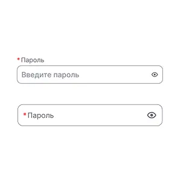
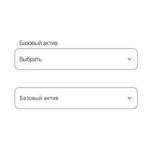


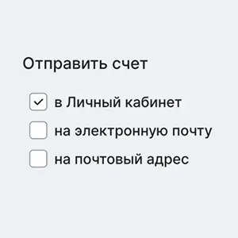
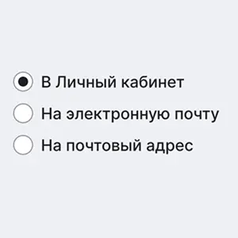
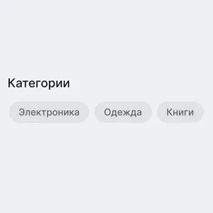

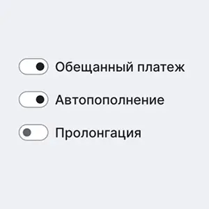
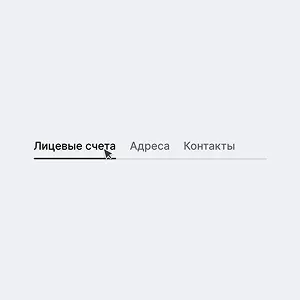
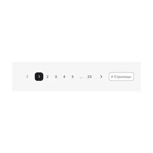

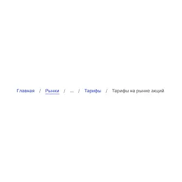


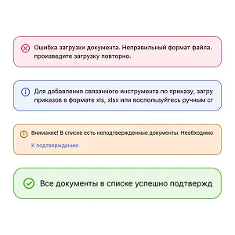
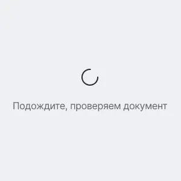

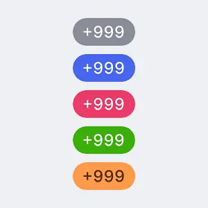
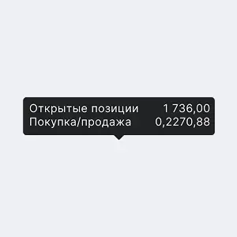
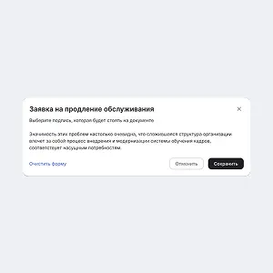
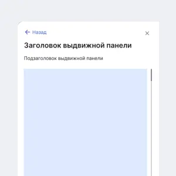

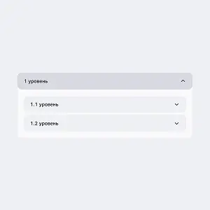
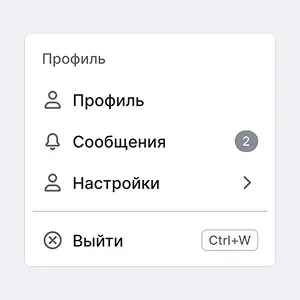
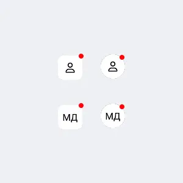
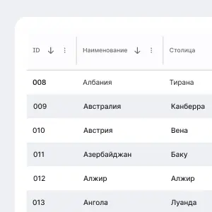
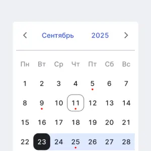
В этой категории пока нет изображений.
Документация
Документация создавалась одновременно с компонентами и была частью релиза, а не постфактум-описанием.
Каждый компонент описан через назначение, анатомию, поведение, размеры, токены и взаимодействие с клавиатурой. Это позволило использовать систему как единый источник знаний для дизайнеров и разработки.
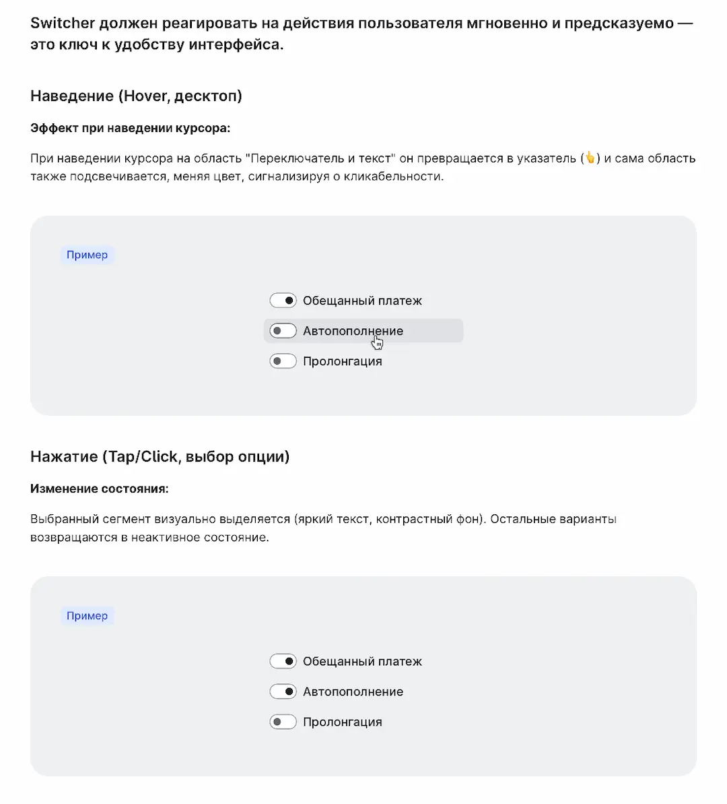
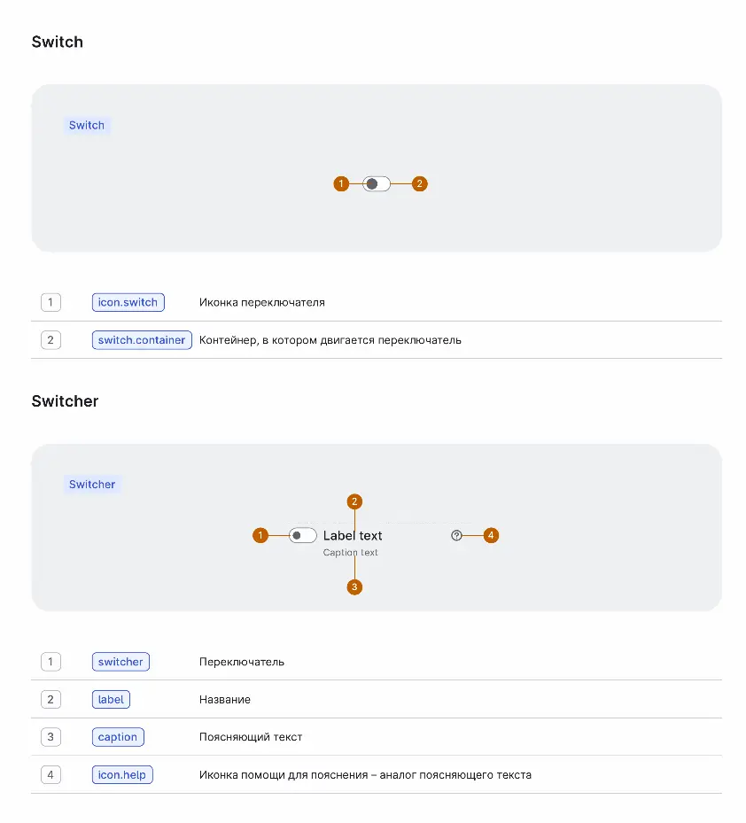
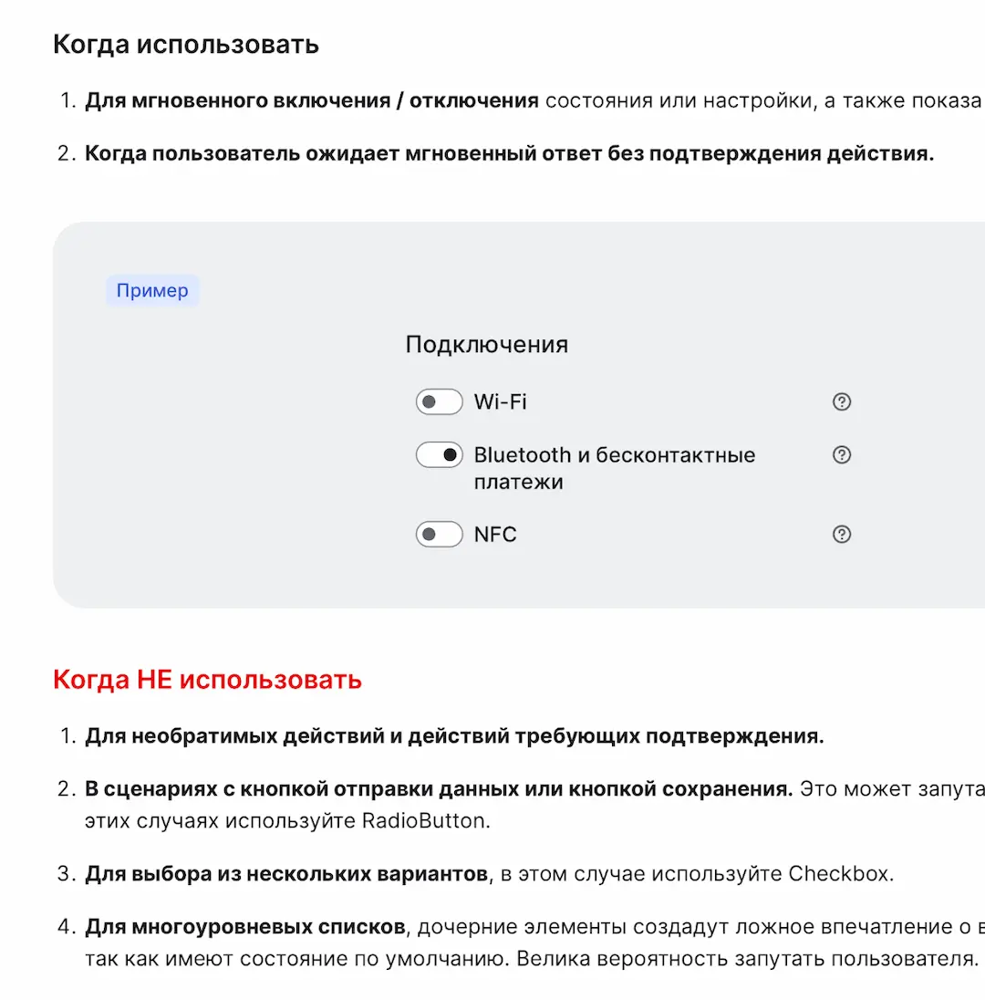
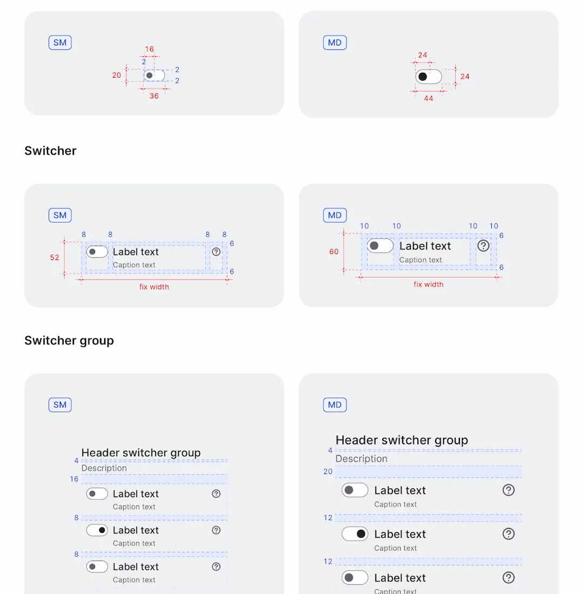
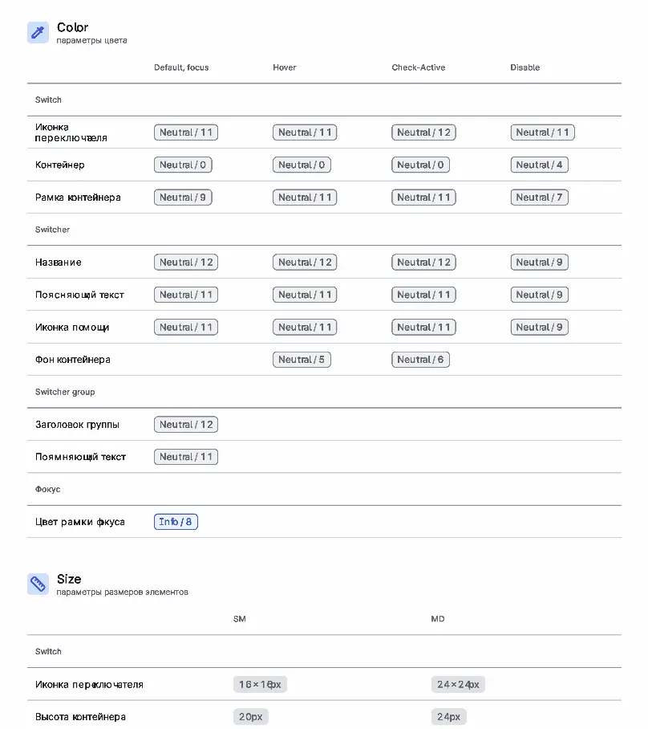
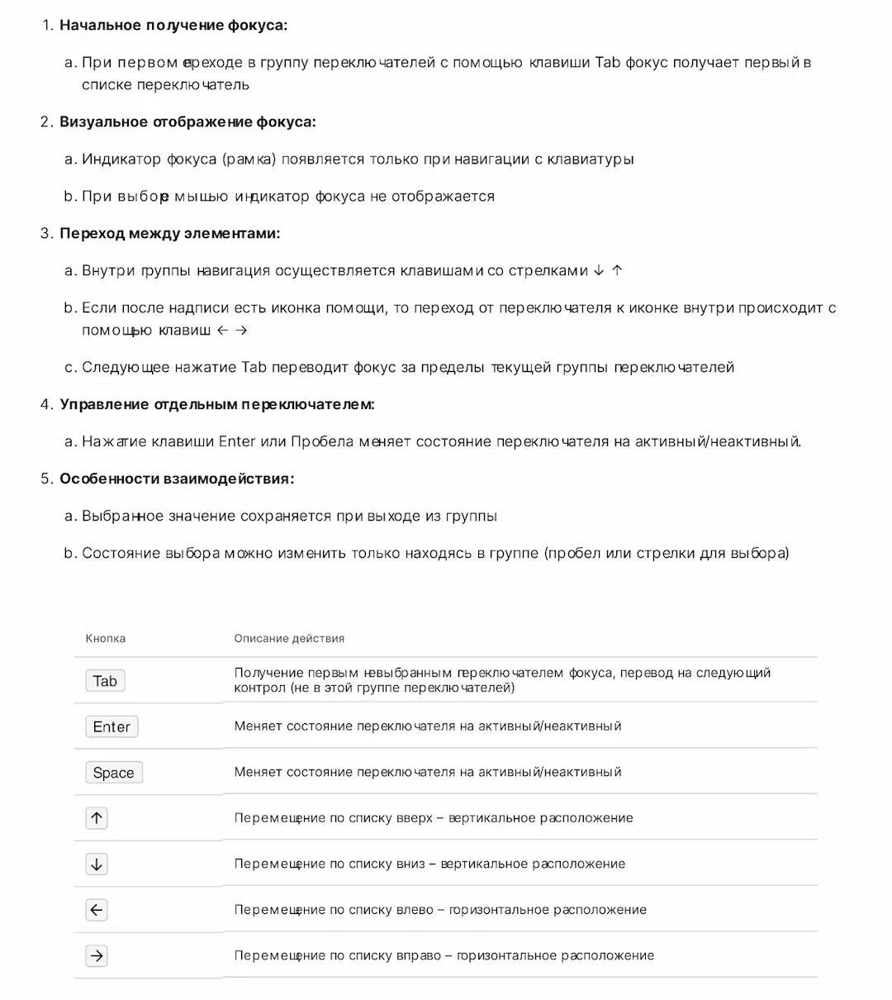
Результаты
Масштаб системы
- 44+ компонентов
- 9 групп токенов
- 5 продуктовых команд
- Релиз каждые 2 недели
- ~10 входящих запросов на изменения в месяц
Эффект
- Ускорение проектирования интерфейсов
- Снижение количества UI-ошибок
- Консистентность между продуктами
- Единые UX-паттерны между командами
- Улучшение коммуникации между дизайном и разработкой
- Предсказуемость внедрения решений
- Масштабируемая база для развития новых продуктов
Выводы
- Дизайн-система стала не просто библиотекой компонентов, а инструментом проектирования и согласования решений между командами.
- Разделение универсальных элементов и продуктовой логики позволило сохранить баланс между гибкостью и стандартизацией.
- Документация стала частью внедрения и обеспечила единое понимание системы.
- Система доказала свою устойчивость и масштабируемость в условиях роста продуктов и требований.